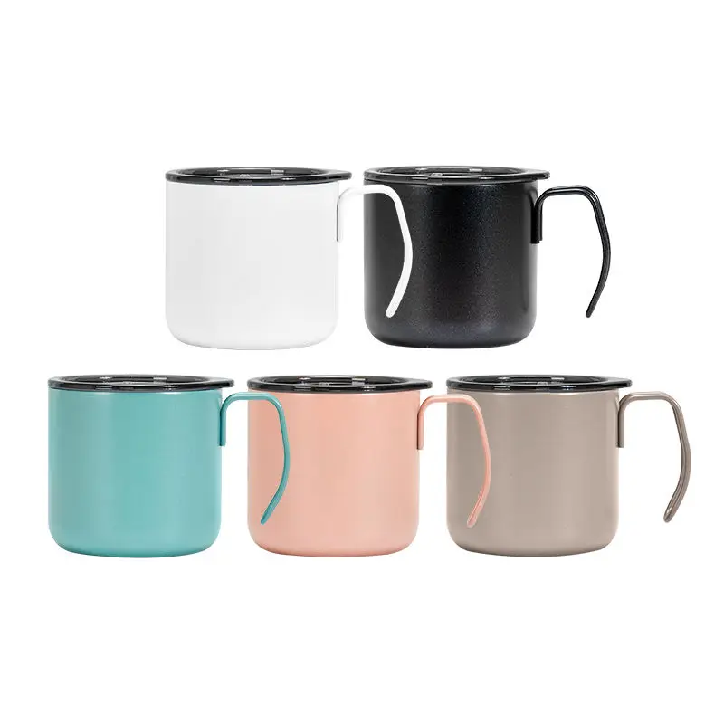
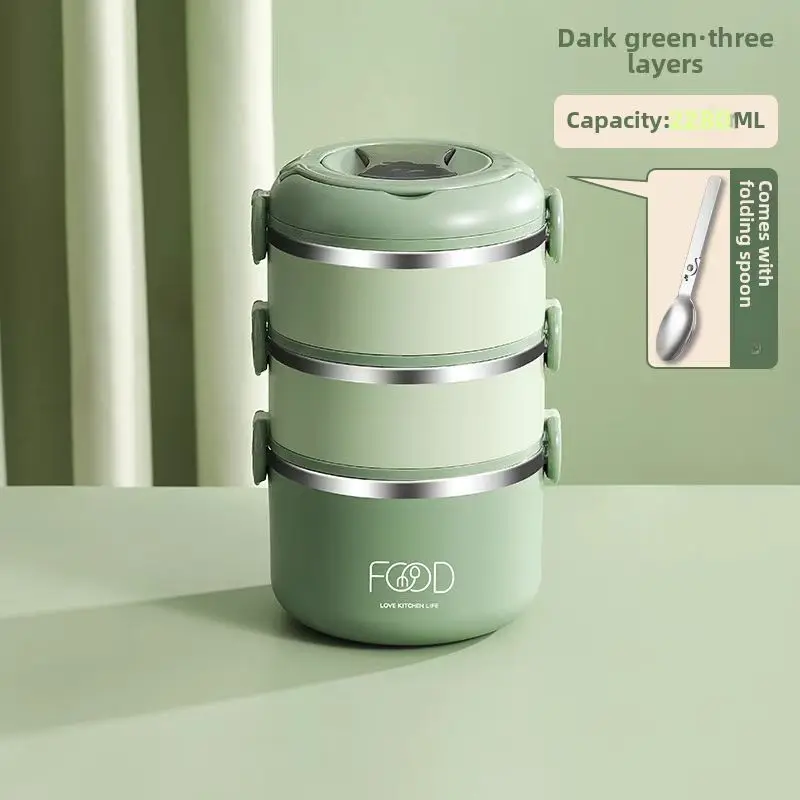

In this guide
Manufacturers tend to treat image optimization as an afterthought: upload the photo, fill the alt field with a product code, move on. In AI-mediated search that is a missed opportunity. When a buyer asks an assistant for a "316 stainless insulated flask with a strap" or a "20 oz matte tumbler with a straw lid," the system needs evidence that a specific factory makes that specific thing. Your product images, and the text attached to them, are part of that evidence.
1. Why images matter in AI search
Two things changed. First, assistants increasingly appear in multimodal interfaces where an image is part of the answer, not just a blue link. Second, even text-only answers draw on pages that contain images, and the text surrounding those images helps a retrieval system decide what the page is about. A well-labeled product photo gives a system a concrete object to associate with your brand and your specification. An unlabeled one contributes almost nothing.
This does not mean stuffing every image with keywords. It means treating each photo as a factual statement: here is what the object is, here is what it is made of, here is the capacity you can see, here is the context it is used in. The words do the work that the pixels cannot reliably do on their own.

2. What a system can read from an image
Assume the pixels alone are not enough. A retrieval pipeline typically sees a bundle of text signals attached to the image file. Make all of them describe the same object.
| Signal | What it tells a machine | How to get it right |
|---|---|---|
| File name | The subject of the image before any text is parsed | Use hyphenated description: 316-flask-with-strap.png, not IMG_2043.png |
| Alt text | The accessible, factual description of what is visible | One clear sentence: product, material or color, visible feature |
| Caption / figcaption | Context that connects the image to the page argument | Add a fact the alt text cannot carry, such as the range or use case |
| Surrounding copy | Why the image appears on this page | Place the image next to the paragraph that discusses it |
| Structured data | An explicit machine-readable link between page, product and image | ImageObject / Product fields that match the visible content |
These signals also help human buyers. A procurement manager scanning a comparison page reads the caption, not the metadata, and a descriptive caption answers a question faster than a paragraph of adjectives. Good image SEO is mostly good technical writing.
3. Writing alt text that carries facts
Alt text exists for accessibility first. That constraint is useful: it forces you to describe what is actually there. Write it the way you would explain the photo to someone who cannot see it, then stop. Do not turn it into a keyword string and do not repeat the site name in every field.
| Weak alt text | Better alt text | Why |
|---|---|---|
| "tumbler" | "20 oz stainless steel straw tumbler in matte white" | Names product type, capacity, material, visible finish |
| "best bottle custom logo drinkware China" | "Vacuum insulated water bottle with powder-coated finish" | Describes the image instead of campaigning |
| "product image 1" on every photo | A different factual description for each photo | Duplicates give a retrieval system no way to distinguish the images |
| "lunch box" | "Three-tier insulated stainless steel lunch container, open" | Adds the visible structure that differentiates the SKU |
One more rule: keep the alt text true after a product revision. If a lid changes or a capacity is updated, the image description must change too. Stale labels are a common source of mismatched answers in AI search, and they are easy to fix.

4. Original photos and provenance
Stock photography is the default in B2B marketing and the fastest way to become invisible. Thousands of sites use the same polished image of a generic bottle on a gradient background. When an assistant needs to attribute a product to a manufacturer, that image carries no provenance and gives it no reason to pick your page.
Original factory photography solves two problems at once. It shows the real product — correct lid, correct proportions, real finish — and it creates an asset that exists only on your domain. You do not need a studio. A consistent light background, a clear front view and one detail shot per model are enough to beat a stock image. Add a short visible caption stating the product type and material, and the page becomes a primary source rather than a repost.
The same principle applies to specification imagery: dimension drawings, comparison shots of two finishes, close-ups of a gasket or a lid thread. These are the images buyers actually want, and they are difficult for a competitor to copy without reproducing your product. They also generate useful alt text naturally, because a dimension drawing can be described in factual terms.
5. Structured data for images
Schema is not a substitute for visible text, but it can make the relationship between a page, a product and its images explicit. An ImageObject can state the image URL and caption. A Product block can list images alongside the name, category and material. The critical constraint is consistency: every field must agree with what a person sees on the page. Marking a stock photo as your own product, or declaring a specification the image does not show, creates conflicting signals and erodes trust.
Keep the implementation lean. One accurate Product block with real image URLs and matching alt text is more useful than a large graph of generic markup. Validate the result, then check that the same facts appear in the visible copy — the structured data should repeat reality, not invent it. This follows the same logic as a well-built FAQ page: the machine-readable version and the human-readable version say the same thing.

6. A 30-day image audit
This is a finite project, not an ongoing burden. Work through it once, then maintain it when new models are added.
- Week 1 — inventory. List every product image on the site with its URL, file name, alt text and the page it appears on. Flag generic file names and duplicates.
- Week 2 — rewrite. Give each image one factual alt text and one caption that adds context. Differentiate similar models by material, capacity, color or visible feature.
- Week 3 — replace. Swap stock images for photos of the real SKU where you can. Photograph the top ten revenue products first, not the whole catalog.
- Week 4 — wire up. Check that the image URLs in Product/ImageObject markup resolve, that the facts match the visible copy, and that new images are included in the sitemap where relevant.
After the audit, add one rule to your product publishing workflow: no image goes live without a descriptive file name and alt text written at the same time. Retrofitting a hundred images is painful; writing two lines when the photo is uploaded is not.
Need real photos and specifications for your listings?
Tell us which models you are selling. We can share product images, material details and capacity data from the factory so your catalog pages describe the exact item you ship — not a generic stock photo.
7. FAQ
Can AI search engines read product images?
Multimodal systems can analyze images, but they rely heavily on the text around them: the file name, alt text, caption, surrounding paragraph and structured data. Treat those fields as the factual description of the image, not as keyword space.
What should alt text say on a B2B product page?
Describe what is visible in plain language, including the product type and any visible specification or use case. For example: 20 oz stainless steel straw tumbler in matte white. Avoid keyword lists and avoid repeating the same alt text on every image.
Do I need ImageObject schema for product photos?
It is not mandatory, but it helps. ImageObject and Product schema can state the image URL, caption and what the image depicts in machine-readable form. The fields must match what a person sees on the page; mismatched markup is worse than no markup.
How often should a manufacturer audit product images?
Run a full audit once a quarter and a quick check whenever a new product line ships. Look for missing or duplicated alt text, stock photos presented as factory photos, broken files and captions that do not match the current product specification.
SSMug is the drinkware brand of Yongkang STWADD Houseware Co., Ltd., a factory founded in 2017 with more than 167 catalog models and a monthly capacity above 500,000 units. Product images on this site show the models we actually produce, and every technical claim on the page is available in the compliance files we share with buyers.
Building a distributor catalog or a new product page?
Send us your channel and target market. We will propose a small set of models with the images, specifications and compliance documents you need to publish them properly — with a quote and lead time attached.
✉️ Ask for a catalog content package · Or use the inquiry form →